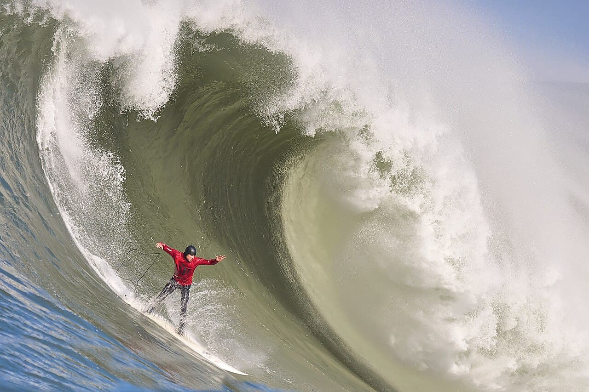

Mavericks
Californie (USA) · surf

Un spot de grosses vagues où des murs d’eau de 15 m déferlent dans une eau froide réputée pour ses requins.
- Lieu
- Californie (USA)
- Niveau
- Expert
- Activités
- surf
- Type d'eau
- Mer / océan
- Coordonnées
- 37.49, -122.50 (position approximative du secteur)
Dangers à connaître
- Eaux froides à requins.
- Vagues géantes.
Le conseil d'Ocean Buddy
Big wave extrême : tow-in et gilet de sécurité, réservé à une poignée de pros.
Ouvrir dans Ocean Buddy Télécharger sur l'App Store
Source : Description historique Ocean Buddy · vérification externe en attente.